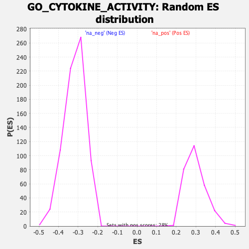

| | | Dataset | DE_genes |
| Phenotype | NoPhenotypeAvailable |
| Upregulated in class | na_pos |
| GeneSet | GO_CYTOKINE_ACTIVITY |
| Enrichment Score (ES) | 0.6970147 |
| Normalized Enrichment Score (NES) | 2.334824 |
| Nominal p-value | 0.0 |
| FDR q-value | 0.0 |
| FWER p-Value | 0.0 |
Table: GSEA Results Summary
 Fig 1: Enrichment plot: GO_CYTOKINE_ACTIVITY
Fig 1: Enrichment plot: GO_CYTOKINE_ACTIVITY
Profile of the Running ES Score & Positions of GeneSet Members on the Rank Ordered List
| PROBE | GENE SYMBOL | GENE_TITLE | RANK IN GENE LIST | RANK METRIC SCORE | RUNNING ES | CORE ENRICHMENT | | 1 | CCL8 | | | 7 | 15.196 | 0.0750 | Yes |
| 2 | CCL4 | | | 9 | 14.658 | 0.1478 | Yes |
| 3 | CCL11 | | | 22 | 11.788 | 0.2055 | Yes |
| 4 | IL1RN | | | 39 | 9.443 | 0.2514 | Yes |
| 5 | TNFSF13B | | | 63 | 7.768 | 0.2885 | Yes |
| 6 | CCL7 | | | 70 | 7.435 | 0.3250 | Yes |
| 7 | TNFSF10 | | | 80 | 7.044 | 0.3594 | Yes |
| 8 | CXCL10 | | | 86 | 6.536 | 0.3915 | Yes |
| 9 | CCL19 | | | 99 | 6.189 | 0.4215 | Yes |
| 10 | TNF | | | 104 | 6.046 | 0.4512 | Yes |
| 11 | TNFSF14 | | | 125 | 5.540 | 0.4775 | Yes |
| 12 | CCL3 | | | 130 | 5.365 | 0.5038 | Yes |
| 13 | IL27 | | | 151 | 4.912 | 0.5269 | Yes |
| 14 | IL17C | | | 178 | 4.336 | 0.5468 | Yes |
| 15 | CTF1 | | | 193 | 3.967 | 0.5656 | Yes |
| 16 | CCL18 | | | 201 | 3.823 | 0.5841 | Yes |
| 17 | CXCL16 | | | 207 | 3.734 | 0.6023 | Yes |
| 18 | IL1A | | | 261 | 3.130 | 0.6144 | Yes |
| 19 | CCL2 | | | 284 | 2.886 | 0.6273 | Yes |
| 20 | CXCL11 | | | 310 | 2.681 | 0.6390 | Yes |
| 21 | CMTM2 | | | 322 | 2.625 | 0.6513 | Yes |
| 22 | IL1B | | | 343 | 2.495 | 0.6624 | Yes |
| 23 | TNFSF8 | | | 399 | 2.212 | 0.6698 | Yes |
| 24 | CKLF | | | 412 | 2.111 | 0.6795 | Yes |
| 25 | CXCL6 | | | 421 | 2.072 | 0.6893 | Yes |
| 26 | NAMPT | | | 486 | 1.817 | 0.6941 | Yes |
| 27 | SECTM1 | | | 713 | 1.255 | 0.6856 | Yes |
| 28 | GDF15 | | | 783 | 1.135 | 0.6867 | Yes |
| 29 | BMP2 | | | 800 | 1.109 | 0.6912 | Yes |
| 30 | IL20 | | | 844 | 1.051 | 0.6936 | Yes |
| 31 | TIMP1 | | | 930 | 0.945 | 0.6927 | Yes |
| 32 | CCL5 | | | 937 | 0.940 | 0.6970 | Yes |
| 33 | TNFRSF11B | | | 1024 | 0.824 | 0.6955 | No |
| 34 | CXCL13 | | | 1108 | 0.748 | 0.6938 | No |
| 35 | TGFB1 | | | 1170 | 0.699 | 0.6933 | No |
| 36 | WNT5A | | | 1236 | 0.653 | 0.6923 | No |
| 37 | IL11 | | | 1273 | 0.625 | 0.6930 | No |
| 38 | LTB | | | 1307 | 0.609 | 0.6939 | No |
| 39 | AIMP1 | | | 1309 | 0.608 | 0.6969 | No |
| 40 | IL18 | | | 1391 | 0.569 | 0.6944 | No |
| 41 | IL10 | | | 1425 | 0.555 | 0.6950 | No |
| 42 | GRN | | | 1573 | 0.481 | 0.6878 | No |
| 43 | CCL20 | | | 1581 | 0.479 | 0.6897 | No |
| 44 | IL23A | | | 1699 | 0.433 | 0.6842 | No |
| 45 | CCL13 | | | 1770 | 0.401 | 0.6817 | No |
| 46 | CMTM7 | | | 2204 | 0.265 | 0.6547 | No |
| 47 | IL4 | | | 2385 | 0.229 | 0.6441 | No |
| 48 | CXCL1 | | | 2830 | 0.158 | 0.6159 | No |
| 49 | IFNK | | | 2971 | 0.143 | 0.6075 | No |
| 50 | IL17A | | | 3052 | 0.136 | 0.6029 | No |
| 51 | CXCL9 | | | 3057 | 0.135 | 0.6033 | No |
| 52 | IL36G | | | 3135 | 0.127 | 0.5989 | No |
| 53 | GDF9 | | | 3331 | 0.111 | 0.5868 | No |
| 54 | IFNE | | | 3445 | 0.103 | 0.5799 | No |
| 55 | CCL28 | | | 3514 | 0.098 | 0.5759 | No |
| 56 | CMTM5 | | | 3517 | 0.097 | 0.5763 | No |
| 57 | CCL26 | | | 3717 | 0.087 | 0.5637 | No |
| 58 | IL32 | | | 3784 | 0.082 | 0.5598 | No |
| 59 | EDN1 | | | 3846 | 0.079 | 0.5563 | No |
| 60 | NODAL | | | 4223 | 0.057 | 0.5320 | No |
| 61 | IL17F | | | 4257 | 0.055 | 0.5301 | No |
| 62 | CD40LG | | | 4263 | 0.055 | 0.5301 | No |
| 63 | IL16 | | | 4376 | 0.049 | 0.5230 | No |
| 64 | CX3CL1 | | | 4512 | 0.041 | 0.5144 | No |
| 65 | CCL17 | | | 4682 | 0.033 | 0.5035 | No |
| 66 | IL36RN | | | 4817 | 0.025 | 0.4949 | No |
| 67 | CCL24 | | | 4863 | 0.023 | 0.4921 | No |
| 68 | VSTM1 | | | 4902 | 0.021 | 0.4897 | No |
| 69 | BMP8B | | | 4964 | 0.018 | 0.4858 | No |
| 70 | NRG1 | | | 4994 | 0.016 | 0.4840 | No |
| 71 | THPO | | | 5015 | 0.015 | 0.4828 | No |
| 72 | OSM | | | 5025 | 0.014 | 0.4822 | No |
| 73 | TNFSF4 | | | 5074 | 0.012 | 0.4792 | No |
| 74 | IL17B | | | 5121 | 0.010 | 0.4762 | No |
| 75 | CCL22 | | | 5136 | 0.010 | 0.4753 | No |
| 76 | IL13 | | | 5427 | -0.006 | 0.4564 | No |
| 77 | BMP3 | | | 5523 | -0.010 | 0.4503 | No |
| 78 | NDP | | | 5544 | -0.011 | 0.4490 | No |
| 79 | C1QTNF4 | | | 5608 | -0.015 | 0.4450 | No |
| 80 | IL22 | | | 5620 | -0.016 | 0.4444 | No |
| 81 | LEFTY2 | | | 5708 | -0.021 | 0.4388 | No |
| 82 | XCL2 | | | 5760 | -0.024 | 0.4356 | No |
| 83 | BMP4 | | | 5938 | -0.035 | 0.4242 | No |
| 84 | IFNG | | | 6033 | -0.041 | 0.4183 | No |
| 85 | LTA | | | 6056 | -0.043 | 0.4171 | No |
| 86 | GDF5 | | | 6133 | -0.048 | 0.4123 | No |
| 87 | FASLG | | | 6250 | -0.056 | 0.4050 | No |
| 88 | XCL1 | | | 6351 | -0.062 | 0.3988 | No |
| 89 | IL19 | | | 6540 | -0.075 | 0.3869 | No |
| 90 | CCL21 | | | 6653 | -0.085 | 0.3800 | No |
| 91 | EBI3 | | | 6654 | -0.085 | 0.3805 | No |
| 92 | GPI | | | 6770 | -0.093 | 0.3734 | No |
| 93 | PF4 | | | 6861 | -0.099 | 0.3680 | No |
| 94 | WNT2 | | | 7083 | -0.117 | 0.3542 | No |
| 95 | WNT7A | | | 7126 | -0.121 | 0.3520 | No |
| 96 | SPP1 | | | 7256 | -0.132 | 0.3443 | No |
| 97 | CMTM8 | | | 7292 | -0.135 | 0.3427 | No |
| 98 | FAM3D | | | 7378 | -0.142 | 0.3378 | No |
| 99 | GREM2 | | | 7401 | -0.144 | 0.3371 | No |
| 100 | SCG2 | | | 7456 | -0.149 | 0.3343 | No |
| 101 | INHBB | | | 7820 | -0.181 | 0.3115 | No |
| 102 | BMP7 | | | 8209 | -0.219 | 0.2873 | No |
| 103 | CRLF1 | | | 8417 | -0.242 | 0.2750 | No |
| 104 | IL17D | | | 8618 | -0.264 | 0.2632 | No |
| 105 | C5 | | | 8664 | -0.270 | 0.2616 | No |
| 106 | IL6 | | | 8782 | -0.284 | 0.2554 | No |
| 107 | IL33 | | | 9216 | -0.336 | 0.2288 | No |
| 108 | TSLP | | | 9261 | -0.342 | 0.2276 | No |
| 109 | CD70 | | | 9621 | -0.392 | 0.2062 | No |
| 110 | BMP8A | | | 9814 | -0.419 | 0.1957 | No |
| 111 | TGFB2 | | | 9925 | -0.436 | 0.1907 | No |
| 112 | FAM3B | | | 9951 | -0.440 | 0.1912 | No |
| 113 | TNFSF9 | | | 10091 | -0.460 | 0.1845 | No |
| 114 | CXCL5 | | | 10222 | -0.480 | 0.1783 | No |
| 115 | FLT3LG | | | 10236 | -0.482 | 0.1799 | No |
| 116 | HMGB1 | | | 10466 | -0.514 | 0.1675 | No |
| 117 | KITLG | | | 10591 | -0.537 | 0.1621 | No |
| 118 | CXCL3 | | | 10593 | -0.537 | 0.1647 | No |
| 119 | CXCL14 | | | 10622 | -0.541 | 0.1655 | No |
| 120 | BMP5 | | | 10632 | -0.543 | 0.1676 | No |
| 121 | TNFSF13 | | | 10676 | -0.550 | 0.1676 | No |
| 122 | CCL23 | | | 10746 | -0.560 | 0.1658 | No |
| 123 | BMP6 | | | 10761 | -0.562 | 0.1677 | No |
| 124 | CMTM3 | | | 10904 | -0.582 | 0.1613 | No |
| 125 | TGFB3 | | | 10966 | -0.592 | 0.1603 | No |
| 126 | CSF3 | | | 10987 | -0.595 | 0.1619 | No |
| 127 | TNFSF15 | | | 11172 | -0.630 | 0.1531 | No |
| 128 | GDF10 | | | 11187 | -0.633 | 0.1553 | No |
| 129 | IL12A | | | 11231 | -0.643 | 0.1557 | No |
| 130 | IL34 | | | 11280 | -0.653 | 0.1558 | No |
| 131 | IL7 | | | 11324 | -0.661 | 0.1563 | No |
| 132 | THNSL2 | | | 11352 | -0.668 | 0.1578 | No |
| 133 | GDF11 | | | 11600 | -0.720 | 0.1453 | No |
| 134 | CSF1 | | | 11758 | -0.753 | 0.1388 | No |
| 135 | AREG | | | 11769 | -0.755 | 0.1419 | No |
| 136 | CXCL12 | | | 11856 | -0.773 | 0.1401 | No |
| 137 | VEGFA | | | 12537 | -0.937 | 0.1004 | No |
| 138 | CXCL2 | | | 12622 | -0.959 | 0.0996 | No |
| 139 | SCGB3A1 | | | 12671 | -0.972 | 0.1013 | No |
| 140 | IL24 | | | 12937 | -1.057 | 0.0893 | No |
| 141 | PPBP | | | 12965 | -1.066 | 0.0928 | No |
| 142 | FAM3C | | | 12991 | -1.073 | 0.0965 | No |
| 143 | TNFSF12 | | | 13048 | -1.090 | 0.0983 | No |
| 144 | GREM1 | | | 13082 | -1.101 | 0.1016 | No |
| 145 | LIF | | | 13208 | -1.142 | 0.0991 | No |
| 146 | BMP1 | | | 13279 | -1.167 | 0.1003 | No |
| 147 | CSF2 | | | 13417 | -1.218 | 0.0974 | No |
| 148 | INHBA | | | 13665 | -1.317 | 0.0878 | No |
| 149 | IL15 | | | 13797 | -1.380 | 0.0862 | No |
| 150 | FGF2 | | | 13838 | -1.396 | 0.0905 | No |
| 151 | CLCF1 | | | 13913 | -1.431 | 0.0928 | No |
| 152 | TXLNA | | | 14499 | -1.788 | 0.0634 | No |
Table: GSEA details [plain text format]

Fig 2: GO_CYTOKINE_ACTIVITY: Random ES distribution
Gene set null distribution of ES for GO_CYTOKINE_ACTIVITY